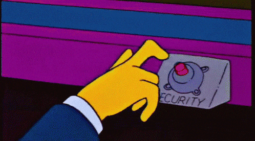
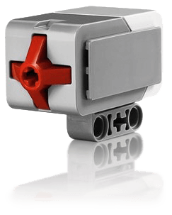
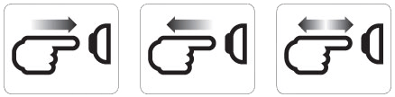
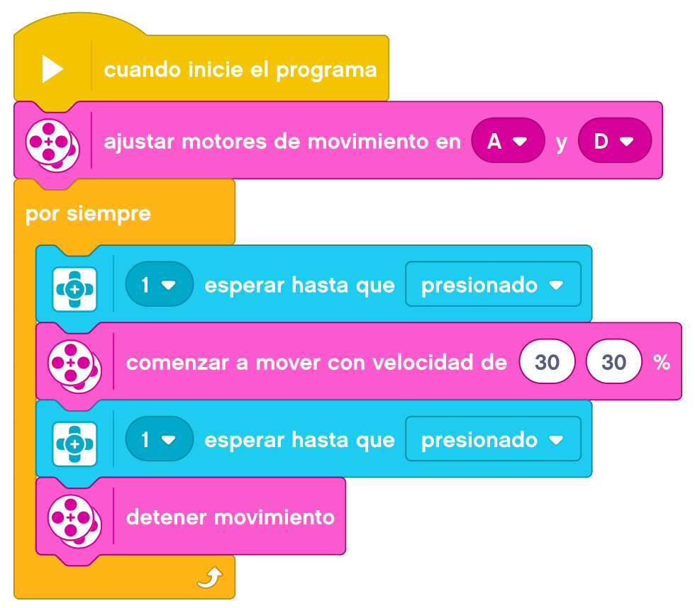
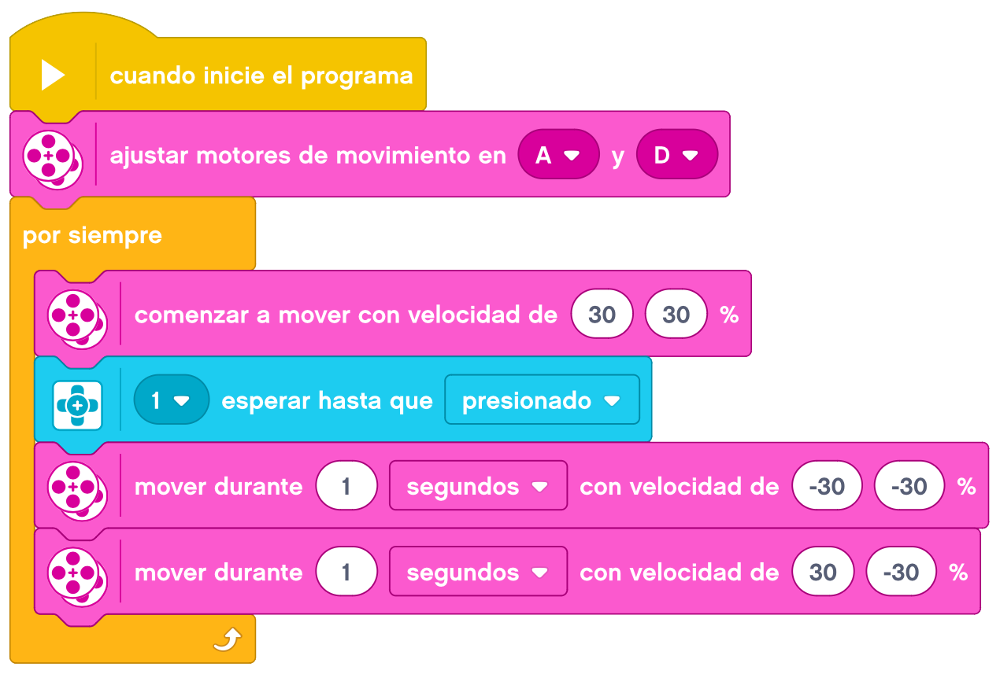

El sensor táctil es un sensor analógico que puede detectar el momento en el que se presiona y se libera el botón del sensor.

Esto significa que el sensor táctil puede programarse para actuar según tres condiciones: presionado, liberado o en contacto (tanto presionado como liberado).

Con la información del sensor táctil, se puede programar un robot para ver el mundo como lo haría una
persona no vidente, es decir, extendiendo un brazo y respondiendo cuando toca algo (presionado).
Se puede construir un robot con un sensor táctil presionado contra la superficie. Luego, se puede programar
el robot para que responda (se detenga) cuando esté a punto de pasar el borde de la mesa (cuando el sensor
se libera).
Un robot de pelea puede programarse para continuar empujando hacia adelante en dirección a su oponente hasta
que este se retire. Ese par de acciones, presionado y liberado, constituyen el estado “En contacto”.
Se le puede incorporar al sensor un eje LEGO para incrementar la longitud efectiva y detectar presiones a
una mayor distancia.
Como decíamos antes, los diferentes estados del sensor táctil son:
- Presionado
- Liberado
- En Contacto

Empezaremos por montar nuestra Base Motriz a la que añadiremos el Sensor Táctil.
En el primer reto, haremos que nuestro robot empiece a andar cuando pulsemos el sensor táctil.
Un ejemplo de como podemos resolver el reto es el siguiente.
Ahora lo hacemos al revés, haremos que nuestro robot se pare cuando pulsemos el sensor táctil.
Un ejemplo de como podemos resolver el reto es el siguiente.
Toca unir los dos retos anteriores. Primero para que empiece a funcionar, tendremos que pulsar el sensor
táctil y volver a pulsarlo para poder pararlo.
Un ejemplo de como podemos resolver el reto es el siguiente.

Para finalizar los retos de esta actividad, programaremos un coche de choque. Lo primero que haremos será
cambiar de sitio el sensor táctil para que quede por delante de nuestro robot y pueda ser pulsado por
cualquier obstáculo.
Lo que haremos será programar nuestro robot para que cuando choque con algún obstáculo (se presione el
sensor táctil) de marcha atrás y haga un giro de unos 90º antes de volver a ir hacia delante.
Un ejemplo de como podemos resolver el reto es el siguiente.
